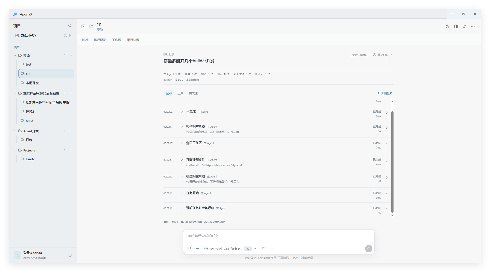
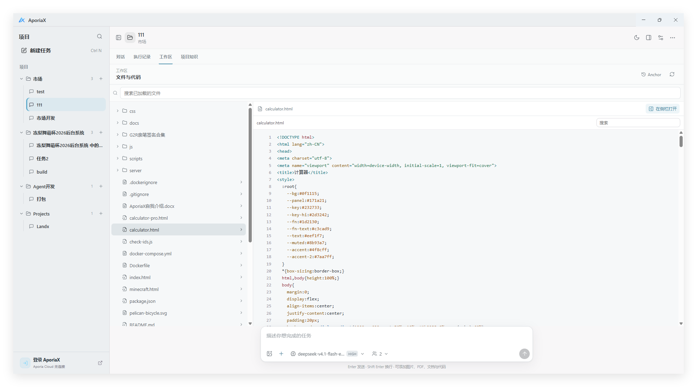
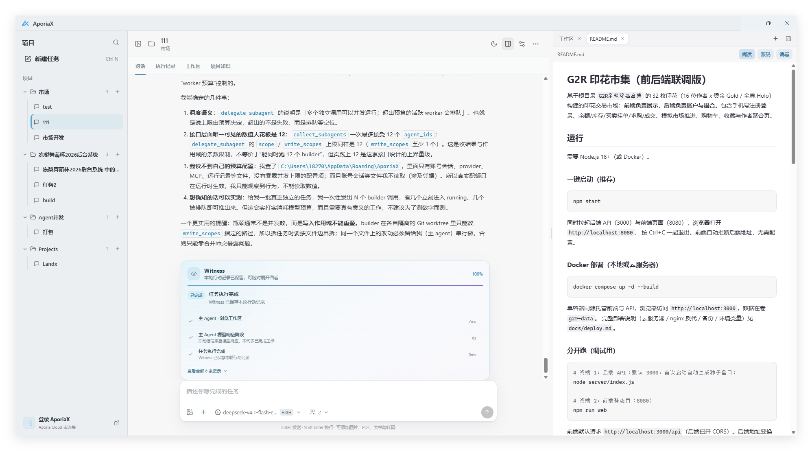
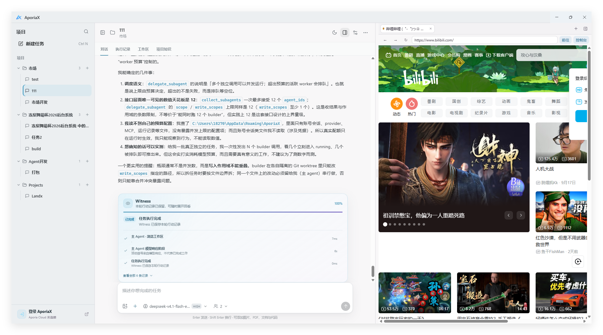
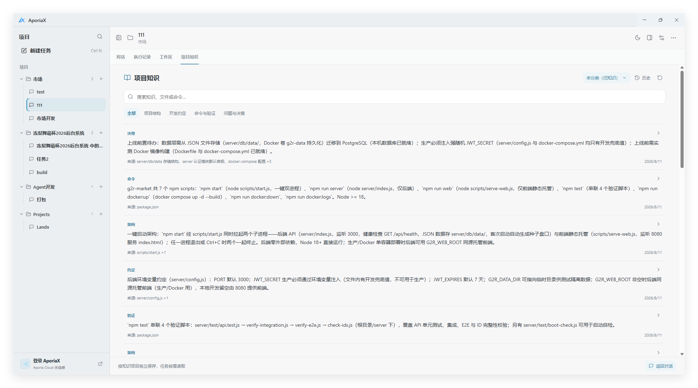

AporiaX 使用教程
从连接模型开始，让第一个任务真正跑起来。
适用版本：1.0.0-preview · 更新：2026-09-22。教程中的按钮名称以简体中文界面为准。Preview 仍有已知问题，不代表所有任务都能无人值守完成。
第一次使用只需先读「添加 API Key」和「第一个任务」。后面的章节可以遇到问题时再查，不必先理解 Agent、MCP 等全部术语。
- 添加 API Key
- 第一个任务
- 认识四个主页面
- 侧栏：文件、浏览器与终端
- Git 与 GitHub
- 项目知识
- Skill 与 MCP
- 子 Agent、Builder 与费用
- 暂停、恢复与任务状态
- 权限、沙箱与数据安全
- 常见问题
- 更新与反馈
01 · 添加 API Key
先分清两条连接方式
使用自己的 API：在模型服务商处取得 API Key，添加到 AporiaX。费用和可用模型由该服务商决定；不需要先登录 Aporia Cloud。
使用 Aporia Cloud：点击左下角「登录 AporiaX」，或模型选择里的「登录 Aporia Cloud」，在浏览器完成授权。未登录时，Cloud 模型显示为灰色，不能直接使用。Aporia Cloud 登录与 GitHub 登录不是同一件事。
下面以自己的 API 为主。不要把 API Key 发到聊天框，也不要在教程网站中填写；它只应填写到桌面应用的 API Key 输入框。
第一步：准备 Key、地址与模型
打开你所选服务商的官方 API 控制台，创建 API Key，确认 API 账户可用。需要准备：
| 信息 | 是什么 | 常见填错方式 |
|---|---|---|
| API Base URL | 服务商文档提供的接口基础地址 | 填成聊天网页、登录地址，或完整的 /chat/completions 请求地址 |
| API Key | 服务商创建的 API 访问密钥 | 填成账号密码，或把 Bearer 前缀一起粘贴 |
| 请求协议 | 该地址实际支持的 API 格式 | 因模型名称像 Claude 就选择 Anthropic，但中转服务实际只支持兼容协议 |
| 模型 ID | API 接受的准确模型名称 | 填网页显示的昵称，或别家服务商的模型 ID |
可以从 DeepSeek 官方首次调用说明 进入其 API Key 申请入口。AporiaX 的「DeepSeek」预设会填入 https://api.deepseek.com 和 DeepSeek native Chat。官方文档目前列出的 Flash 模型 ID 为 deepseek-flash；实际可用型号以你的账户和服务商最新文档为准。
第三方转发服务的地址、密钥、协议必须配套，不要只换模型名。转发服务会接收到发送给模型的内容，请先确认来源可信。
第二步：打开添加界面
- 打开 AporiaX，点击窗口左上角的 AporiaX 标志，进入设置。
- 选择「模型与 API」，点击「新增 API」。
- 也可以在任务输入框的模型选择菜单中点击「添加自己的 API」，直接进入同一个表单。
无需修改配置文件，也不需要先在终端设置环境变量。
第三步：填写并保存
- 选择对应的「常用服务」预设；其他服务则手动填写。
- 「名称」填一个方便自己识别的名字，如“我的 DeepSeek”。名称不是模型 ID。
- 核对「API Base URL」和「请求协议」。如果服务商明确提供 OpenAI 兼容 Chat API，选择
Chat Completions (compatible)；原生接口则选择对应协议。 - 将密钥粘贴到「API Key」。本机无鉴权服务可以留空，云服务通常需要填写。
- 点击「自动发现」获取模型列表。若服务不支持模型列表接口，可以按其文档每行手动填写一个模型 ID。
- 点击「添加 Provider」。再次编辑已有配置时，API Key 留空表示保持原密钥，不是清除密钥。
保存按钮灰色？ 先检查地址是否为空，以及是否至少填入一个模型 ID。自动发现失败？ 不一定是 Key 无效：模型列表接口可能未开放，仍可手动填写后验证。
第四步：选中模型，做一次小测试
回到任务，在输入框下方打开模型选择，选择刚添加的服务与模型。只保存 Provider，不代表已切换当前任务的模型。
先发送这段话：
请只回复“连接成功”，不要调用工具，不要读取或修改文件。
收到回复说明这次基本对话请求成功；不等于图片理解、工具调用和长任务全部验证通过。这次测试也会按服务商规则计费。「自动发现」成功仅代表拿到了模型列表，不代表推理额度充足。
若连接失败，先按常见问题核对报错，不要连续启动长任务反复测试。
02 · 第一个任务
- 准备一个独立文件夹作为练习工作区，不要直接选择整个磁盘或放满个人资料的目录。
- 点击「新建任务」，选择工作区，给任务命名。尚未配置模型时，按提示先添加 API 或登录 Cloud。
- 初次体验可保持「项目知识」关闭，避免把无关项目知识带进任务。
- 选择已验证可用的模型，检查任务设置里的执行方式与审批方式。对权限不确定时先选「手动审批」。
- 说明目标、允许修改的范围和验证要求。
一个适合练习的请求：
在这个练习目录创建一个 hello.html，显示“你好，AporiaX”。
只创建这一个文件，不安装依赖、不联网、不修改其他文件。
完成后告诉我文件路径，以及你实际做了哪些验证。
完成后点击文件链接，在侧栏或工作区查看文件。做真实项目时可以先说：
先阅读项目并说明入口、启动方式和风险，不要改代码、安装依赖或运行测试。
清楚的范围比一句“帮我做好”更容易得到可核对的结果。运行命令、安装软件、推送代码等动作，需要看清实际授权范围。
03 · 认识四个主页面
| 页面 | 用来做什么 | 建议重点看什么 |
|---|---|---|
| 对话 | 提需求、补充约束、查看回复和交付物 | 文件链接、修改摘要、未完成项、Witness 执行摘要 |
| 执行记录 | 了解这轮任务实际执行了哪些动作 | 最新记录在上；点详情看工具参数、结果、错误与验证证据 |
| 工作区 | 浏览本地文件树、查看内容与改动 | 当前工作区是否正确；文件可在侧栏打开 |
| 项目知识 | 查看、分类和按需使用长期项目信息 | 知识来源、所属项目、是否已过时 |

执行记录中的“模型响应阶段”表示正在等待或接收模型响应，不是可读的内部思考过程。Agent 激活次数也不是完成度或模型请求次数；Builder 的运行数、排队数和并发上限是另一组信息。

工作区里的 Anchor 默认收起，点击「Anchor」可查看快照。恢复前先确认会影响哪些文件；它不是整个磁盘的备份，也不能代替 Git。
04 · 侧栏：文件、浏览器与终端
点击任务右上角的侧栏按钮；空侧栏中选择要打开的工具，也可用标签栏的「+」继续添加。拖动主对话与侧栏之间的分隔线调整宽度。
文件与文档
- Markdown 支持「阅读」「源码」和编辑切换，阅读模式会排版标题、表格和代码块。
- 代码文件可以查看语法高亮；编辑后留意是否已经保存。
- Word 可预览格式，但复杂分页、字体和 Office 特性仍应使用 Word 等实际软件复核。
- 图片可在侧栏查看。文件路径必须指向真实文件，且位于授权范围内。

可以对 Agent 说：“把刚生成的文档在侧栏打开。” 不要只凭回复中出现了一个文件名，就认为文件已经成功生成。
浏览器
可以打开网页或本地预览地址，与对话并排使用；Agent 的浏览器展示也可以出现在这里。网站登录、验证码和外部站点限制仍可能需要人工处理。

关闭浏览器标签会关闭对应浏览页面，不等于停止为网页提供服务的终端进程。例如启动了本地预览服务器，结束后仍需在对应终端中停止它。
终端
点击终端内容区后输入命令。Ctrl+C 用于中断当前前台命令，通常会返回 Shell 提示符；「清屏」只清除显示，不是结束进程。关闭终端标签会结束对应终端会话，不是把它安全地转入后台。
若 Shell 本身已退出，需重新启动终端会话。复制输出反馈问题前，检查其中有没有密钥、私人路径或账号信息。
侧边聊天
用于询问当前任务进度、查看可观察的执行信息，或进行独立聊天，不直接打断主任务。它依赖已有记录与自己的模型配置，不代表能看到主 Agent 尚未返回的内部推理；提问可能产生额外模型费用。
05 · Git 与 GitHub
在空侧栏选择「Git」。Git 是本地版本管理；GitHub 是远程托管服务，二者不是同一件事。
- 新目录可以初始化仓库；克隆已有仓库应使用空目录，避免覆盖现有文件。
- 点击当前分支，可新建或切换本地分支。切换前先处理未提交改动，避免打断正在写文件的任务。
- 修改后查看 Diff，只暂存需要提交的文件，再填写说明并提交。
- 在仓库设置中配置远程地址和提交署名。若要连接 GitHub，按界面指引通过终端和浏览器完成授权。
- 核对远程仓库、公开/私有状态与提交内容，再执行推送。
初始化、绑定远程、提交和推送是不同步骤。绑定仓库不代表代码已上传。提交之前排除 .env、API Key、个人资料和大体积临时文件。
可以这样提需求：“检查当前 Git 状态，帮我连接到指定仓库，先不要提交或推送。” GitHub CLI 未安装或未登录时，需要先完成界面提示的准备工作。
06 · 项目知识：可选，不是强制记忆
一个工作区可能包含多个项目，项目知识可以按不同知识项目分别保存。它适合记录架构、约定、常用命令与重要决策，不适合保存密码或把整段对话机械复制进去。
- 打开「项目知识」，点击右上角的当前项目名称，切换或创建知识项目、调整相关设置。
- 新建任务时选择是否启用，以及使用哪个知识项目；已有任务也可通过任务右键菜单调整。
- 使用搜索与分类查找内容，点击条目右侧的箭头查看来源与详情。
- 通过「历史」查看修订；恢复旧版本前先确认内容是否仍适用。

关闭知识功能仍可查看已有知识；启用后模型通过工具按需读取，不是把整个知识库固定塞进每次请求。自动整理知识是独立选项，可能消耗模型额度。当前文件和你的最新要求优先于旧知识；过时内容仍需要核对。
07 · Skill 与 MCP：扩展做事的方法与工具
Skill 是可阅读的工作流说明及其资源，例如文档排版规范。它指导模型怎么做，不是装上就必然提高质量。
MCP 是外部工具连接，例如一个本地工具进程或远程服务。它可能需要运行环境、账号和额外权限；不是另一个模型。
打开「设置 → 扩展」：
- 在「发现」中选择 Skill 或 MCP，搜索需要的能力。
- 先查看来源、许可证、依赖和权限要求，再选择安装或配置。不要因为能搜到就信任。
- Skill 也可以导入包含
SKILL.md的本地文件夹；MCP 可以导入 JSON 配置。 - 在「已安装」中检查状态。MCP 的「探测」可能启动服务或下载依赖；发现工具不代表已验证实际业务操作。
- 在任务输入框用
@选择扩展，例如@skill:名称或@mcp:标识。只选当前任务真正需要的扩展。
导入 MCP 不代表立即连接，后续启用和实际调用仍受权限约束。本地 MCP 进程不因出现在扩展列表里就获得操作系统级隔离。不要将带真实凭据的 MCP JSON 发到公开仓库。
08 · 子 Agent、Builder 与费用
主 Agent 负责理解需求、决定委派、整合与验收。Explore 做探索，Review 做审查，Verify 做验证，Curator 整理知识；Builder 可在限定范围内并行修改。是否启用取决于任务，不是每次都运行全部角色。
Builder 并发可选 0 / 1 / 2 / 3 / 4 / 6，默认 2。这是同时运行的 Builder 上限，不是所有 Agent 的总数，也不保证一定启动满额。
建议先用默认值；小任务可设为 0。只有任务可按独立文件范围拆分、模型配额和机器资源也允许时，再提高并发。多个 Builder 反复改同一个文件，可能增加等待与合并成本。
在执行记录中查看每轮激活次数、Builder 当前并发、排队和峰值。完成次数不代表结果全部验收通过。更多 Agent、侧聊、知识整理和重试都可能增加费用；不能仅凭“并发更高”判断效率更好。
09 · 暂停、恢复与任务状态
| 情况 | 当前行为与建议 |
|---|---|
| 暂时断网、可恢复连接故障 | 进入等待并尝试重连，不必立即新建重复任务 |
| 电脑睡眠后唤醒 | 应用进程仍存活时可继续；睡眠期间不会持续推进任务 |
| 手动暂停 | 需要你手动继续，不会因网络恢复自行解除 |
| 点击停止 | 不会因唤醒或网络恢复复活；先检查已产生的文件和外部动作 |
| 应用退出、崩溃或电脑重启 | 不等同于睡眠，通常需要查看可恢复任务并手动处理 |
保留的是应用已经接收并能够保存的任务状态，不包含模型尚未返回的计算。网络故障前某条命令或上传是否已成功可能无法确定，不应盲目重复执行；重试也可能产生重复费用。
“已交付 · 未验证”表示已有交付但尚无足够验证证据，不等于测试通过。运行失败时先查看错误，保留已生成文件，确认原因后再重试。不要只看百分比或绿色图标判断成品质量。
10 · 权限、沙箱与数据安全
任务设置中的执行方式与审批方式是两件事：前者决定在哪里执行，后者决定什么动作需要你确认。
| 执行方式 | 边界 |
|---|---|
| 直接 / Direct | 在真实工作区执行，修改直接影响文件；不是系统级隔离 |
| 安全 / Safe | 使用临时工作区副本及同步检查；仍使用宿主机的进程与网络权限，不是强沙箱 |
| 隔离 / Isolated | 依赖可用的 Docker 环境，默认断网、只读系统与工作区写入约束；不可用时拒绝，不静默退回普通执行 |
初次接触陌生项目，优先审查来源并使用更保守的审批方式。「全自动审批」不代表没有风险，「安全」字样也不代表任意程序都无害。
本地优先不等于所有内容永不离开电脑：调用云模型时，相关提示词、工具结果和显式提供的内容会发送给所选服务；网页、远程 MCP 等也涉及网络请求。不要提供无关私人文件或生产密钥。
更多边界见 AporiaX 安全说明。
11 · 常见问题
Cloud 模型是灰色，不能发送？
先完成 Aporia Cloud 登录，或添加自己的 API 并选中它。自己的 API 配置成功不等于已登录 Cloud；Cloud 额度不足也不会自动改用你的其他付费服务。
自动发现成功，但对话仍失败？
模型列表与对话请求是不同接口。核对当前选中的 Provider、模型 ID、额度、协议和报错正文，再发送最小测试。不要把“已添加”理解为所有能力验证通过。
401、402、429、404 或网络错误怎么办？
| 错误线索 | 优先检查 |
|---|---|
| 401 / 认证失败 | Key 是否正确、过期、属于当前服务；是否夹带空格或前缀 |
| 余额不足（有些服务使用 402） | API 账户余额或配额；和聊天网页会员可能分开 |
| 429 / 请求过多 | 服务商限流；降低并发、等待恢复，不要持续重试 |
| 404 / 模型不存在 | Base URL、协议与模型 ID；不要重复拼接接口路径 |
| 超时 / 连接失败 | 网络、代理、服务地址；本地模型服务是否已启动 |
| 400 / 参数或协议不兼容 | 请求协议、模型工具能力和服务商实际支持范围 |
错误码含义可能因服务商不同而变化，以报错正文与服务商文档为准。DeepSeek 用户可参考其官方错误码说明。反馈时可以提供错误码与脱敏截图，不要提供 Key。
文件链接打不开，或者提示路径越界？
先在「工作区」确认文件真实存在，核对所属工作区、文件名与扩展名。跨工作区文件需要相应授权，不要通过关闭边界检查来绕过。可让 Agent 重新核对文件并返回正确链接，而不是反复点击旧路径。
Markdown 只看到井号和代码？
确认正在使用新版，并切换到「阅读」模式，而不是「源码」。Word 预览和最终 Office 排版不完全等价，正式交付前仍需打开实际文件检查。
扩展显示已安装，为什么不能用？
检查是否启用、依赖是否安装、环境变量是否齐全、MCP 探测是否成功，以及任务是否选择了正确扩展。探测成功不表示已经验证写入、发送等实际操作；授权不足时应解决授权问题，不应扩大到无关权限。
任务很慢，是不是多开 Builder 就行？
先看执行记录：是在等待模型、外部命令、审批还是网络恢复。连续依赖的任务不能靠并行缩短；盲目增大并发可能更容易限流和增加费用。
12 · 更新与反馈
在「设置 → 关于 → 检查更新」查看新版本。安装版可下载后重启安装；便携版按提示打开下载页，退出旧版后替换。不要在重要任务写文件时直接强制更新。
1.0.0-preview 保留预览版标识与已知问题。Windows 知识项目、Curator 统计和部分执行记录 UI 检查仍有待修复项，详见版本说明。
反馈问题时提供：软件版本、安装版/便携版、可重复操作步骤、错误正文，以及脱敏后的截图。避免上传真实 API Key、完整私人会话和机密项目。
教程是使用说明，不会在网页上调用模型或处理你的 API Key。